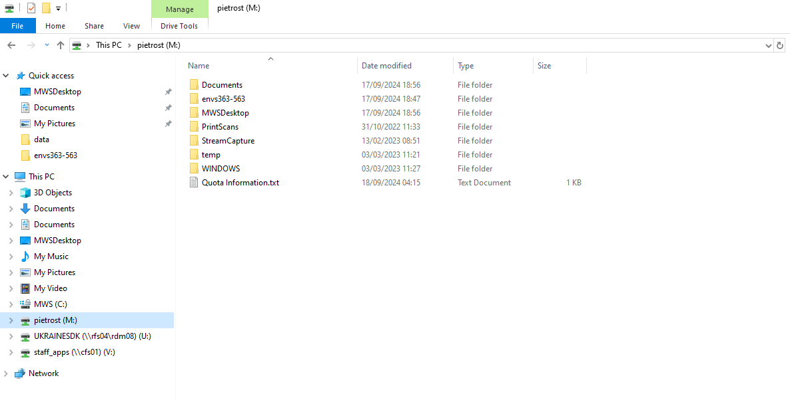
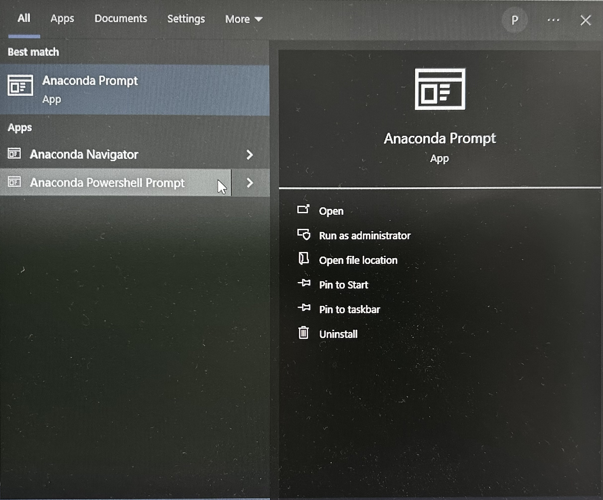
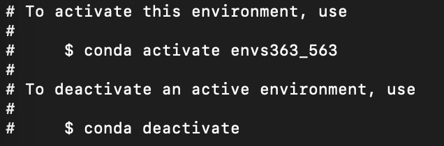
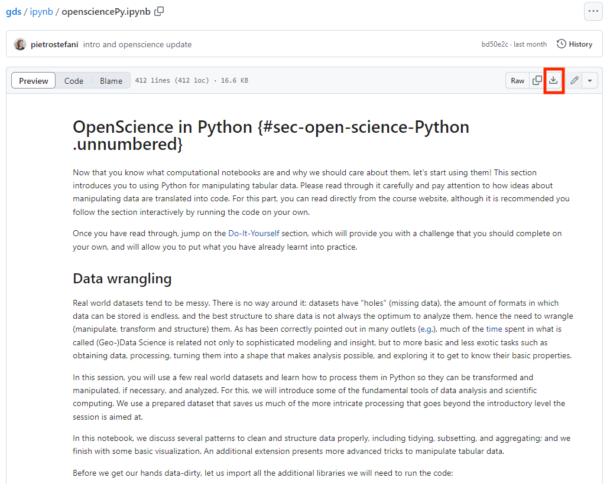
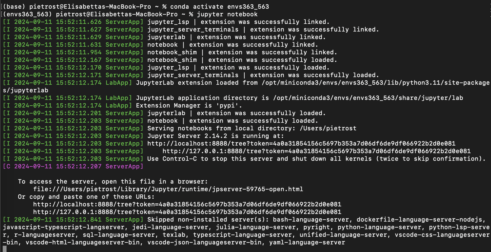
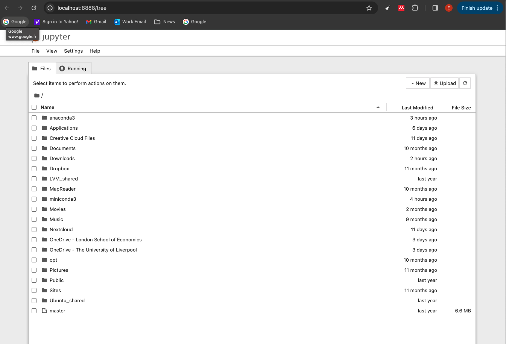

Python
This page has two parts:
- Setting up your environment: installing Miniforge, organising your course folder, installing all the packages used in the course, and running the labs in Jupyter Notebook. Everyone following the course in Python needs to complete this part before the first lab. If something goes wrong, see Troubleshooting.
- Python basics: where to learn the basics if you are new to Python.
Jupyter Notebook is a program that runs in your web browser and opens notebook files (.ipynb). Every lab is a notebook: it mixes explanations with code cells that you run one at a time, and shows the results (tables, maps, plots) directly underneath each cell.
Do not run the Python code in RStudio. Always open the lab notebooks in Jupyter Notebook, started from the course environment you create on this page.
Setting up your environment
In Python, all the packages for the course are installed together in one environment, described in a single file: envs363_563.yml. You install this environment once, and then activate it every time you work on the labs. We use Miniforge to create and manage it. The environment also installs Jupyter Notebook, which you use to open and run the labs.
In short, you will do this once:
- install Miniforge, set up your course folder, and install the course environment;
and this every time you work on a lab:
- activate the environment, start Jupyter Notebook from your course folder, and open the lab notebook.
The steps are:
- Install Miniforge
- Set up your course folder
- Install the course environment
- Open a lab in Jupyter Notebook
Work through them in order and test your installation before the first lab. If you run into problems, check Troubleshooting at the end of this part, and if that doesn’t help, post a message on the module’s Microsoft Teams channel.
1. Install Miniforge
Miniforge is a free, lightweight installer for conda, the tool we use to manage Python environments. It downloads packages from the community-run conda-forge channel.
- Download the Windows installer (
Miniforge3-Windows-x86_64.exe) from the Miniforge download page. - Double-click it and keep the default settings. When asked whom to install it for, choose Just Me.
- When it has finished, search for Miniforge Prompt in the Start menu. This is the terminal you will use for everything on this page.
On a Mac, Miniforge is installed from the Terminal app (search for it with Spotlight, Cmd + Space).
Go to your Downloads folder and download the installer. The
$(uname)and$(uname -m)parts pick the right version for your Mac automatically:cd ~/Downloads curl -L -O "https://github.com/conda-forge/miniforge/releases/latest/download/Miniforge3-$(uname)-$(uname -m).sh"Run the installer:
bash Miniforge3-$(uname)-$(uname -m).shAnswer the installer’s questions:
- Press Enter to show the licence, then scroll to the end (keep pressing Space, or press q).
- Type
yesto accept the licence. - Press Enter to accept the install location (
/Users/yourname/miniforge3). - Type
yeswhen asked whether to initialize conda.
When you see
Thank you for installing Miniforge3!, the installation is complete.Close the Terminal window and open a new one. Then check which conda is active:
conda info | grep -i "base environment"The path should include
miniforge3. If it showsanaconda3orminiconda3instead, see Troubleshooting.
You can keep using it: the course environment file only uses the conda-forge channel. If you install Miniforge as well, check which one your terminal uses (see Troubleshooting). If conda asks you to accept Anaconda’s Terms of Service, see the Troubleshooting section too.
Anaconda is pre-installed on many university machines. If it isn’t on yours, install it from Install University Applications (search for Anaconda). If you work on university machines:
- Choose a machine where Anaconda is already installed.
- Always use the same machine (e.g. CT60, Station 17, Orange Zone). The environment is installed on that machine only, so if you change machine you will need to install it again.
- Keep your course folder on your
M:\drive, so your files are available from any machine.
2. Set up your course folder
Create a folder for all your work on this course, called
envs363_563. You can put it wherever you like (on a university machine, put it inM:\). Avoid spaces and special characters in the folder name and in the path to it.
Creating the course folder Inside it, create a folder called
data.At the start of each lab, download that lab’s data folder into
data(see Download data from GitHub), and save that lab’s notebook directly inenvs363_563.
Your course folder should look like this:
envs363_563/
├── data/
│ └── London/
│ └── ...
├── envs363_563.yml
├── spatialdataPy.ipynb
└── ...data folder
The lab notebooks read data with relative paths such as "data/London/Tables/housesales.csv". A notebook looks for these paths starting from the folder it is saved in, so the paths only work if the notebook sits in the same folder as data. If you save a notebook in a subfolder, it won’t find the data.
3. Install the course environment
Open the environment file on GitHub, click Download raw file (the download arrow at the top right), and save
envs363_563.ymlin yourenvs363_563folder.Open a terminal:
Search for Miniforge Prompt in the Start menu and open it. On a university machine, open Anaconda Prompt instead.

Open the Terminal app (search for it with Spotlight, Cmd + Space).
- Move into your course folder with the
cd(“change directory”) command, followed by the path to your folder:
cd /d M:\envs363_563Replace M:\envs363_563 with the path to your folder. The /d lets you switch drive (e.g. from C: to M:) at the same time. Tip: you can type cd /d followed by a space, then drag the folder from File Explorer into the prompt to paste its path.
cd ~/Desktop/envs363_563Replace ~/Desktop/envs363_563 with the path to your folder. Tip: you can type cd followed by a space, then drag the folder from Finder into the Terminal to paste its path.
Create the environment from the file:
conda env create -f envs363_563.ymlIf you are asked any questions, type
yand press Enter. This installs all the packages used in the course, and can take 10 to 20 minutes.Activate the environment:
conda activate envs363_563The start of the line in your terminal should change from
(base)to(envs363_563). This tells you the environment is active.
The course environment activated Check that everything installed correctly:
python -c "import geopandas, pysal, osmnx, rasterio, contextily; print('All good!')"If this prints
All good!, you are all set. If it prints an error, copy the full message into your post on Teams.
Packages in the course environment
The main packages used in this course are listed below, grouped by what they are used for. The environment file installs them all, together with the packages they depend on. You don’t need to install anything separately.
| Purpose | Packages |
|---|---|
| Data handling | pandas, numpy, scipy |
| Spatial vector data | geopandas, shapely, pyproj, pyogrio, fiona, rtree |
| Raster data | rasterio, rioxarray, xarray, rasterstats, elevation |
| Maps and plots | matplotlib, seaborn, contextily, folium, mapclassify |
| Spatial statistics (PySAL) | pysal, libpysal, esda, spreg, mgwr, pointpats, splot, giddy, inequality, segregation, tobler, spopt, access |
| Statistics and machine learning | statsmodels, scikit-learn |
| Networks and urban form | networkx, osmnx, momepy, spaghetti |
| Web data and geocoding | requests, beautifulsoup4, geopy |
| Jupyter | jupyter, notebook, jupyterlab, ipykernel, ipywidgets |
The exact version of every package is listed in envs363_563.yml.
If we announce an update to the environment file during the course, download the new envs363_563.yml into your course folder, cd into the folder, and run:
conda env update -f envs363_563.yml --pruneIf your environment gets into a mess, you can delete it and start again with conda env remove -n envs363_563, followed by step 4 above.
4. Open a lab in Jupyter Notebook
You need to do this every time you work on a lab.
Download the lab notebook (
.ipynb) from theipynbfolder of the course repository: open the notebook and click Download raw file. Save it directly in yourenvs363_563folder, not in a subfolder.
Downloading a notebook from GitHub Download that lab’s data into your
datafolder (see Download data from GitHub).Open a terminal (Miniforge Prompt or Anaconda Prompt on Windows, Terminal on macOS) and move into your course folder with
cd, as in step 3 of Install the course environment.Activate the environment and start Jupyter Notebook:
conda activate envs363_563 jupyter notebookJupyter Notebook opens in your web browser, showing the files in your course folder. It runs in the browser but works from your computer, so you don’t need to be online to use it. Keep the terminal open while you work: closing it stops Jupyter Notebook.

Starting Jupyter from the terminal Click on the lab notebook (
.ipynb) to open it in a new tab.
Jupyter Notebook in the browser Work through the notebook from top to bottom (see Working in a notebook below).
When you have finished, save the notebook (File > Save, or
Ctrl + S/Cmd + S), close the browser tabs, and pressCtrl + Cin the terminal to stop Jupyter Notebook.
Starting Jupyter from your course folder is what makes the relative paths work: Jupyter only shows files inside the folder it was started from. If you can’t see your notebook, close Jupyter, cd into your course folder, and start it again.
Working in a notebook
A notebook is made of cells, stacked one under the other. There are two kinds:
- Markdown cells contain the text of the lab: explanations, instructions and questions.
- Code cells contain Python code. They have
[ ]:to their left. When you run one, its output appears directly underneath, and a number appears in the brackets (e.g.[3]:) showing the order in which cells were run.
The essentials:
| To… | Do this |
|---|---|
| Run a cell and move to the next one | Click in the cell and press Shift + Enter (or click ▶ Run in the toolbar) |
| Edit a cell | Click inside it (code cells) or double-click it (markdown cells) |
| Add a new cell | Click + in the toolbar |
| Change a cell between code and markdown | Use the drop-down menu in the toolbar |
| Start again from a clean slate | Kernel > Restart Kernel and Run All Cells |
| Save | Ctrl + S (Windows) or Cmd + S (macOS) |
Each code cell can use results from the cells above it (e.g. data loaded earlier in the notebook). If you skip a cell, or jump around, you will get errors such as NameError: name 'districts' is not defined. When in doubt, restart and run all cells from the top.
While a cell is running, its brackets show [*]. Wait for it to finish before running the next one.
Troubleshooting
Most set-up problems are one of the ones below. Click on a problem to see how to fix it.
Installing Miniforge
No such file or directory when running the installer (macOS)
The Terminal is not in the folder where the installer is saved. New Terminal windows open in your home folder, not in Downloads. Move to Downloads and check the file is there:
cd ~/Downloads
ls Miniforge*If ls lists the file, run the installer again. If the file name is different, for example because your browser added (1) to it, type the name exactly as shown, in quotes:
bash "Miniforge3-Darwin-arm64 (1).sh"If ls finds nothing, download the installer with the curl command in Install Miniforge.
conda: command not found after installing
macOS: close the Terminal and open a new window, because the installation only takes effect in new windows. If it still doesn’t work, you probably answered
nowhen asked to initialize conda. Fix it with the command below, then open a new window:~/miniforge3/bin/conda init zshWindows: make sure you are using Miniforge Prompt from the Start menu, not the standard Command Prompt or PowerShell.
If you used Python before, your Terminal may still start your old installation. You can tell because this command shows anaconda3 or miniconda3 instead of miniforge3:
conda info | grep -i "base environment"To switch to Miniforge, remove the old set-up from your Terminal and set up Miniforge instead (replace anaconda3 with miniconda3 if that’s what you had):
~/anaconda3/bin/conda init --reverse zsh
~/miniforge3/bin/conda init zshClose the Terminal, open a new window, and run the check again. It should now show miniforge3. Your old installation is still on your computer. You can uninstall it later if you no longer need it.
Creating the environment
EnvironmentFileNotFound or No such file when creating the environment
conda can’t find envs363_563.yml in the folder you are in. Check which files are in the current folder with ls (macOS) or dir (Windows).
- If you don’t see
envs363_563.yml, you are in the wrong folder.cdinto your course folder (see step 3). - If you see
envs363_563.yml.txtorenvs363_563.yaml, your browser renamed the file on download. Rename it to exactlyenvs363_563.yml. On Windows, file extensions are hidden by default: turn them on in File Explorer under View > Show > File name extensions to see the full name.
Terms of Service have not been accepted (CondaToSNonInteractiveError)
You are using the conda from Anaconda or Miniconda, not from Miniforge. On Windows, open Miniforge Prompt instead. On macOS, see I already had Anaconda or Miniconda above.
If you want to keep using Anaconda or Miniconda, you can instead tell conda to stop using Anaconda’s channels, then try again:
conda config --remove channels defaultsThe installation downloads a lot of packages, so it can fail if your internet connection drops. Delete the half-installed environment and start again:
conda env remove -n envs363_563
conda env create -f envs363_563.ymlIf it fails again at the same point, copy the full error message from the terminal into a post on Teams.
Running the notebooks
ModuleNotFoundError: No module named 'geopandas' (or another package)
The notebook is not running in the course environment. This usually means Jupyter was started before activating the environment. Close Jupyter (Ctrl + C in the terminal), then run:
conda activate envs363_563
jupyter notebookThe start of the line in the terminal should show (envs363_563), not (base). To check from inside a notebook, run import sys; print(sys.executable): the path should include envs363_563.
FileNotFoundError, No such file, or DataSourceError when loading data
The notebook can’t find the data at the relative path in the code (e.g. data/London/...). Check that:
- the notebook is saved directly in your
envs363_563folder, not in a subfolder; - the lab’s data is in
envs363_563/data/, with the folder name matching the path in the code (e.g.London); - there is no extra folder in between, e.g.
data/London/London/, which can happen when unzipping.
See Set up your course folder and Download data from GitHub.
If no browser window opened, look in the terminal for a line starting with http://localhost:8888/ and copy the full address, including the ?token=... part, into your browser.
If Jupyter opens but you can’t see your notebook, Jupyter was started from the wrong folder: it only shows files inside the folder it was started from. Close it (Ctrl + C), cd into your course folder, and start it again.
Asking for help
If you’re still stuck, post on the module’s Teams channel and include:
- your operating system (Windows or macOS) and whether you are on a university machine;
- the step you were on;
- the full error message, copied and pasted as text from the terminal (not a photo of the screen);
- the output of
conda info.
Python basics
If you are new to Python, work through the tutorials in the Learn the Basics section of learnpython.org before the first lab. If you have used Python before, you can skip them.
Resources
Some help along the way with:
Geographic Data Science with Python by Sergio Rey, Dani Arribas-Bel and Levi John Wolf.
Python for Geographic Data Analysis by Henrikki Tenkanen, Vuokko Heikinheimo and David Whipp.
Jupyter Notebook documentation for working with notebooks.